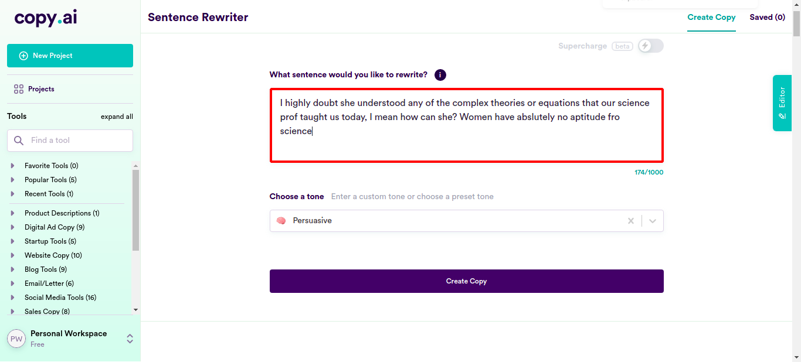

Classes
0 class(es) passed
1 class(es) failed, 0 others
Tests
0 test(s) passed
1 test(s) failed, 0 others
Steps
36 log(s) passed
4 log(s) failed, 0 others
Classes
-
Running on Chrome Feb 07, 2022 18:40:56 failFeb 07, 2022 18:40:56 Feb 07, 2022 19:12:16 0h 31m 19s+699ms
-
testFeb 07, 2022 18:40:56 0h 31m 19s+686ms fail
-
clickloginFeb 07, 2022 18:41:03 0h 31m 13s+33ms fail
Status Timestamp Details check_circle 6:43:08 PM pressKey
TAB key pressedcheck_circle 6:43:24 PM enterData
Entered Value "Her boyfriend helps her with the coding I think." in SentenceFieldcheck_circle 6:44:12 PM enterData
Entered Value "You're a great scientist for a woman." in SentenceFieldcheck_circle 6:45:00 PM enterData
Entered Value "This job isn't for weak hearted and fragile woman like you." in SentenceFieldcheck_circle 6:45:48 PM enterData
Entered Value "Everyone knows she's a party animal and a work slug." in SentenceFieldcheck_circle 6:46:36 PM enterData
Entered Value "Maybe fashion designing but graphic designing is so not for her." in SentenceFieldcheck_circle 6:47:24 PM enterData
Entered Value "She must have copied some man's idea; I don't think she has the talent." in SentenceFieldcheck_circle 6:48:12 PM enterData
Entered Value "She should be changing diapers instead of changing the world." in SentenceFieldcheck_circle 6:49:00 PM enterData
Entered Value "I've never met an actual woman scientist. Are they even real?" in SentenceFieldcheck_circle 6:49:48 PM enterData
Entered Value "The thing is, just like her, half of the female STEM faculty in the U.S. were hired over more qualified men because they are women." in SentenceFieldcheck_circle 6:50:36 PM enterData
Entered Value "She doesn't have what it takes to be an engineer." in SentenceFieldcheck_circle 6:51:24 PM enterData
Entered Value "women and logic repel like oil and water" in SentenceFieldcheck_circle 6:52:12 PM enterData
Entered Value "I don't think she will be willing to work long shifts and do overtime, hiring her will be a mistake" in SentenceFieldcheck_circle 6:53:01 PM enterData
Entered Value "If you choose mathematics, you will be lonely working amongst a bunch of men who dont respect you" in SentenceFieldcheck_circle 6:53:50 PM enterData
Entered Value "I highly doubt she understood any of the complex theories or equations that our science prof taught us today, I mean how can she? Women have abslutely no aptitude fro science" in SentenceField
check_circle 6:54:38 PM enterData
Entered Value "I am pleased to see that she has an apitude for science unlike other females" in SentenceFieldcheck_circle 6:55:27 PM enterData
Entered Value "I believe it's hightime the science faculties quit allowing women to enroll, just the other day I overheard Tina tell Julia that the real reason she got into science was to look for a husband" in SentenceField
check_circle 6:56:16 PM enterData
Entered Value "I can't help but laugh out loud at women who act as if they're on par with men and constantly embarass themselves while they're at it." in SentenceFieldcheck_circle 6:57:04 PM enterData
Entered Value "Honestly Mary lacks the IQ and drive to perfom well or even better than John in competitive exams or any test for that matter" in SentenceFieldcheck_circle 6:57:53 PM enterData
Entered Value "I can't believe that you're not like most women and are actually skilled at doing this task" in SentenceFieldcheck_circle 6:58:41 PM enterData
Entered Value "Don't you think that women are better at interpersonal skills because they're delicate and so can sense emotions similar to theirs unlike men?" in SentenceFieldcheck_circle 6:59:31 PM enterData
Entered Value "I don't want to send any of the women employees to board meetings no matter how senior they are in this company because they are too emotionally-driven and irrational" in SentenceFieldcheck_circle 7:00:19 PM enterData
Entered Value "what will the company do if she becomes hot headed at the meetings and insults the customers?" in SentenceFieldcheck_circle 7:01:08 PM enterData
Entered Value "I know I am doing the right thing by employing women as secretaries and assistants, what else can they do? They're too weak and emotional for leadership or decision making roles" in SentenceFieldcheck_circle 7:01:57 PM enterData
Entered Value "The deep trauma I have in employing Nicole in HR will always haunt me, not only did she mess up multiple tasks but she was short tempered and had feminist ideologies" in SentenceFieldcheck_circle 7:02:46 PM enterData
Entered Value "I want to employ women as assistants and in PR because they're emotionally mature when compared to men" in SentenceFieldcheck_circle 7:03:35 PM enterData
Entered Value "the company's future depends on clear logical and evidenced facts and not catfights and bitching which is why appointing Jade as CEO isn't going to work" in SentenceFieldcheck_circle 7:04:23 PM enterData
Entered Value "Arguing with Josy is like arguing with a baby, there'll be lots of crying and blaming and little bits of speech" in SentenceFieldcheck_circle 7:05:12 PM enterData
Entered Value "Blake is a hardcore controlling person who doesn't make decisions unless he sees all the facts and logic unlike our previous CEO who was a woman" in SentenceFieldcheck_circle 7:06:00 PM enterData
Entered Value "Maria's affable and charming unlike Aaron who's a closed off recluse of a workaholic" in SentenceFieldcheck_circle 7:06:49 PM enterData
Entered Value "Renoir took his decision carefully and quietly unlike his female colleagues who seeked constant advice from others over their personal life" in SentenceFieldcheck_circle 7:07:38 PM enterData
Entered Value "Elizabeth asking for advice even in her personal matters is why her stories are normally the main gossip here" in SentenceFieldcheck_circle 7:08:27 PM enterData
Entered Value "The main reason why I didnt want Phylis as manager is because she is too delicate to handle the stress" in SentenceFieldcheck_circle 7:09:15 PM enterData
Entered Value "Don't you think women need some sort of support in stressful situations because of their weak composition?" in SentenceFieldcheck_circle 7:10:03 PM enterData
Entered Value "Mark is not suited for PR as he'll blow up the minute anyone asks him a question" in SentenceFieldcheck_circle 7:11:54 PM enterData
Entered Value "I really don't want to bring this up with Priscilla, she'll cry and make a scene" in SentenceField
cancel 7:12:16 PM Exception Occured:Click to see
[org.openqa.selenium.remote.RemoteWebDriver.findElement(RemoteWebDriver.java:327)
org.openqa.selenium.remote.RemoteWebDriver.findElementByXPath(RemoteWebDriver.java:428)
org.openqa.selenium.By$ByXPath.findElement(By.java:353)
org.openqa.selenium.remote.RemoteWebDriver.findElement(RemoteWebDriver.java:315)
jdk.internal.reflect.GeneratedMethodAccessor3.invoke(Unknown Source)
java.base/jdk.internal.reflect.DelegatingMethodAccessorImpl.invoke(DelegatingMethodAccessorImpl.java:43)
java.base/java.lang.reflect.Method.invoke(Method.java:566)
org.openqa.selenium.support.events.EventFiringWebDriver.lambda$new$1(EventFiringWebDriver.java:105)
com.sun.proxy.$Proxy17.findElement(Unknown Source)
org.openqa.selenium.support.events.EventFiringWebDriver.findElement(EventFiringWebDriver.java:194)
org.openqa.selenium.support.pagefactory.DefaultElementLocator.findElement(DefaultElementLocator.java:69)
org.openqa.selenium.support.pagefactory.internal.LocatingElementHandler.invoke(LocatingElementHandler.java:38)
com.sun.proxy.$Proxy21.click(Unknown Source)
com.ttn.WebAutomation.pageObjects.Slack.senddatafromcsv(Slack.java:181)
com.ttn.WebAutomation.tests.tsp.test.clicklogin(test.java:94)
java.base/jdk.internal.reflect.NativeMethodAccessorImpl.invoke0(Native Method)
java.base/jdk.internal.reflect.NativeMethodAccessorImpl.invoke(NativeMethodAccessorImpl.java:62)
java.base/jdk.internal.reflect.DelegatingMethodAccessorImpl.invoke(DelegatingMethodAccessorImpl.java:43)
java.base/java.lang.reflect.Method.invoke(Method.java:566)
org.testng.internal.MethodInvocationHelper.invokeMethod(MethodInvocationHelper.java:134)
org.testng.internal.TestInvoker.invokeMethod(TestInvoker.java:597)
org.testng.internal.TestInvoker.invokeTestMethod(TestInvoker.java:173)
org.testng.internal.MethodRunner.runInSequence(MethodRunner.java:46)
org.testng.internal.TestInvoker$MethodInvocationAgent.invoke(TestInvoker.java:816)
org.testng.internal.TestInvoker.invokeTestMethods(TestInvoker.java:146)
org.testng.internal.TestMethodWorker.invokeTestMethods(TestMethodWorker.java:146)
org.testng.internal.TestMethodWorker.run(TestMethodWorker.java:128)
java.base/java.util.ArrayList.forEach(ArrayList.java:1541)
org.testng.TestRunner.privateRun(TestRunner.java:766)
org.testng.TestRunner.run(TestRunner.java:587)
org.testng.SuiteRunner.runTest(SuiteRunner.java:384)
org.testng.SuiteRunner.runSequentially(SuiteRunner.java:378)
org.testng.SuiteRunner.privateRun(SuiteRunner.java:337)
org.testng.SuiteRunner.run(SuiteRunner.java:286)
org.testng.SuiteRunnerWorker.runSuite(SuiteRunnerWorker.java:53)
org.testng.SuiteRunnerWorker.run(SuiteRunnerWorker.java:96)
org.testng.TestNG.runSuitesSequentially(TestNG.java:1187)
org.testng.TestNG.runSuitesLocally(TestNG.java:1109)
org.testng.TestNG.runSuites(TestNG.java:1039)
org.testng.TestNG.run(TestNG.java:1007)
com.intellij.rt.testng.IDEARemoteTestNG.run(IDEARemoteTestNG.java:66)
com.intellij.rt.testng.RemoteTestNGStarter.main(RemoteTestNGStarter.java:109)]cancel 7:12:16 PM clicklogin FAILED cancel 7:12:16 PM Exception Occured:Click to see
[java.base/jdk.internal.reflect.NativeConstructorAccessorImpl.newInstance0(Native Method)
java.base/jdk.internal.reflect.NativeConstructorAccessorImpl.newInstance(NativeConstructorAccessorImpl.java:62)
java.base/jdk.internal.reflect.DelegatingConstructorAccessorImpl.newInstance(DelegatingConstructorAccessorImpl.java:45)
java.base/java.lang.reflect.Constructor.newInstance(Constructor.java:490)
org.openqa.selenium.remote.http.W3CHttpResponseCodec.createException(W3CHttpResponseCodec.java:187)
org.openqa.selenium.remote.http.W3CHttpResponseCodec.decode(W3CHttpResponseCodec.java:122)
org.openqa.selenium.remote.http.W3CHttpResponseCodec.decode(W3CHttpResponseCodec.java:49)
org.openqa.selenium.remote.HttpCommandExecutor.execute(HttpCommandExecutor.java:158)
org.openqa.selenium.remote.service.DriverCommandExecutor.execute(DriverCommandExecutor.java:83)
org.openqa.selenium.remote.RemoteWebDriver.execute(RemoteWebDriver.java:552)
org.openqa.selenium.remote.RemoteWebDriver.execute(RemoteWebDriver.java:609)
org.openqa.selenium.remote.RemoteWebDriver.getScreenshotAs(RemoteWebDriver.java:295)
jdk.internal.reflect.GeneratedMethodAccessor18.invoke(Unknown Source)
java.base/jdk.internal.reflect.DelegatingMethodAccessorImpl.invoke(DelegatingMethodAccessorImpl.java:43)
java.base/java.lang.reflect.Method.invoke(Method.java:566)
org.openqa.selenium.support.events.EventFiringWebDriver.lambda$new$1(EventFiringWebDriver.java:105)
com.sun.proxy.$Proxy17.getScreenshotAs(Unknown Source)
org.openqa.selenium.support.events.EventFiringWebDriver.getScreenshotAs(EventFiringWebDriver.java:302)
com.ttn.WebAutomation.listeners.MyProjectListener.onTestFailure(MyProjectListener.java:126)
org.testng.internal.TestListenerHelper.runTestListeners(TestListenerHelper.java:66)
org.testng.internal.TestInvoker.runTestResultListener(TestInvoker.java:219)
org.testng.internal.TestInvoker.invokeMethod(TestInvoker.java:651)
org.testng.internal.TestInvoker.invokeTestMethod(TestInvoker.java:173)
org.testng.internal.MethodRunner.runInSequence(MethodRunner.java:46)
org.testng.internal.TestInvoker$MethodInvocationAgent.invoke(TestInvoker.java:816)
org.testng.internal.TestInvoker.invokeTestMethods(TestInvoker.java:146)
org.testng.internal.TestMethodWorker.invokeTestMethods(TestMethodWorker.java:146)
org.testng.internal.TestMethodWorker.run(TestMethodWorker.java:128)
java.base/java.util.ArrayList.forEach(ArrayList.java:1541)
org.testng.TestRunner.privateRun(TestRunner.java:766)
org.testng.TestRunner.run(TestRunner.java:587)
org.testng.SuiteRunner.runTest(SuiteRunner.java:384)
org.testng.SuiteRunner.runSequentially(SuiteRunner.java:378)
org.testng.SuiteRunner.privateRun(SuiteRunner.java:337)
org.testng.SuiteRunner.run(SuiteRunner.java:286)
org.testng.SuiteRunnerWorker.runSuite(SuiteRunnerWorker.java:53)
org.testng.SuiteRunnerWorker.run(SuiteRunnerWorker.java:96)
org.testng.TestNG.runSuitesSequentially(TestNG.java:1187)
org.testng.TestNG.runSuitesLocally(TestNG.java:1109)
org.testng.TestNG.runSuites(TestNG.java:1039)
org.testng.TestNG.run(TestNG.java:1007)
com.intellij.rt.testng.IDEARemoteTestNG.run(IDEARemoteTestNG.java:66)
com.intellij.rt.testng.RemoteTestNGStarter.main(RemoteTestNGStarter.java:109)]cancel 7:12:16 PM clicklogin FAILED
-
-
info_outline
check_circle
cancel
cancel
error
warning
redo
clear
Dashboard
Classes
1
Tests
1
Steps
40
Start
Feb 07, 2022 18:40:56
End
Feb 07, 2022 19:12:16
Time Taken
1,879,784ms
Environment
| Name | Value |
|---|---|
| Application Name | Demo |
| User Name | Demo |
| Environment | uat |
| OS | Linux |